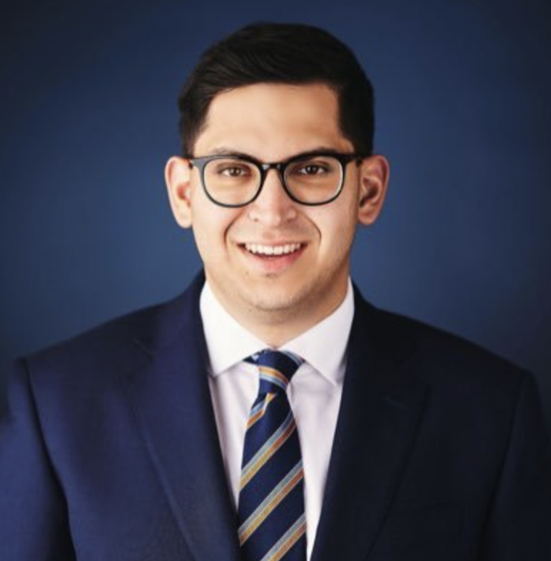

About Me

I was born in a post-Soviet nation and came to America with a promise for a better future.
I was raised in a working class family in small-town Wisconsin. My father owned his own business and my mother was a custodian. I was active in my local Boy Scout Troop and earned my Eagle Scout. I started working at the age of 15. I know what it means to build yourself up thanks to the opportunities in America.
My political career began in suburban Wisconsin during the 2008 presidential election. A day after the Republican National Convention in Minneapolis, Senator John McCain and Governor Sarah Palin embarked on their “All-American Express” tour in my hometown of Cedarburg. As a Boy Scout in Troop 830, it was my turn to lead the Pledge of Allegiance and Presentation of Colors alongside my fellow Scouts. A crowd, illuminating lights, cameras filled the room as Secret Service agents scattered atop the buildings. It was a scene so surreal and intoxicating. I was captivated and felt instantly invested in the election. At that moment, at 13 years old, I knew I wanted to be a part of this - to have a career in politics.
My career began with an unpaid internship on Capitol Hill. However, during those pivotal three years in Washington, I was fortunate to experience a vast range of exposure to American politics. For example, I had the opportunity to work in the communications shop at the Republican Attorneys General Association during the 2018 midterm cycle. After, I served at the U.S. Department of Labor, even in the height of the COVID-19 pandemic. In 2021, I moved to the Sunshine State, and since my time in Tallahassee. I have come to greatly respect and admire Florida politics in a whole new way. I have since served in the Florida Legislature and the Executive Office of the Governor, working closely with high-ranking elected officials and members of Governor's staff.
My hope after earning a Master’s in Mass Communications degree is to stay in Florida. Although I always thought I wanted to go back to Washington D.C., I believe there is a future for me here in Florida politics. With a state of more than 22 million residents, Florida is leading the way. We face new challenges as we enter a new decade of our state, and a new generation of Floridians will be joining the process to prepare us for a more prosperous tomorrow — I want to be one of them. My long-term career goals include returning to the state government to practice legislative affairs. And, further down the road, I'd like to return to the Capitol as an elected Member of the Florida House of Representatives. I do not know where the journey ahead may lead, but there is no state I want to serve more than Florida and be a part of Florida's next generation of leaders.
Outside of the classroom, I love to travel and explore Florida. As someone who is still new to this state, I have yet to see all the natural beauty it has to offer. I am looking to explore the historic parts of Florida as well as its beaches.